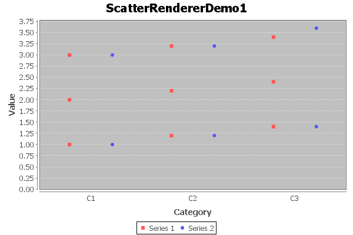

Class ScatterRenderer
- java.lang.Object
-
- org.jfree.chart.renderer.AbstractRenderer
-
- org.jfree.chart.renderer.category.AbstractCategoryItemRenderer
-
- org.jfree.chart.renderer.category.ScatterRenderer
-
- All Implemented Interfaces:
java.io.Serializable,java.lang.Cloneable,LegendItemSource,CategoryItemRenderer,org.jfree.util.PublicCloneable
public class ScatterRenderer extends AbstractCategoryItemRenderer implements java.lang.Cloneable, org.jfree.util.PublicCloneable, java.io.Serializable
A renderer that handles the multiple values from aMultiValueCategoryDatasetby plotting a shape for each value for each given item in the dataset. The example shown here is generated by theScatterRendererDemo1.javaprogram included in the JFreeChart Demo Collection:
- Since:
- 1.0.7
- See Also:
- Serialized Form
-
-
Field Summary
-
Fields inherited from class org.jfree.chart.renderer.AbstractRenderer
DEFAULT_OUTLINE_PAINT, DEFAULT_OUTLINE_STROKE, DEFAULT_PAINT, DEFAULT_SHAPE, DEFAULT_STROKE, DEFAULT_VALUE_LABEL_FONT, DEFAULT_VALUE_LABEL_PAINT, ZERO
-
-
Constructor Summary
Constructors Constructor Description ScatterRenderer()Constructs a new renderer.
-
Method Summary
All Methods Instance Methods Concrete Methods Modifier and Type Method Description java.lang.Objectclone()Returns an independent copy of the renderer.voiddrawItem(java.awt.Graphics2D g2, CategoryItemRendererState state, java.awt.geom.Rectangle2D dataArea, CategoryPlot plot, CategoryAxis domainAxis, ValueAxis rangeAxis, CategoryDataset dataset, int row, int column, int pass)Draw a single data item.booleanequals(java.lang.Object obj)Tests this renderer for equality with an arbitrary object.RangefindRangeBounds(CategoryDataset dataset)Returns the range of values the renderer requires to display all the items from the specified dataset.booleangetBaseShapesFilled()Returns the base 'shape filled' attribute.booleangetDrawOutlines()Returnstrueif outlines should be drawn for shapes, andfalseotherwise.doublegetItemMargin()Returns the item margin, which is the gap between items within a category (expressed as a percentage of the overall category width).booleangetItemShapeFilled(int series, int item)Returns the flag used to control whether or not the shape for an item is filled.LegendItemgetLegendItem(int datasetIndex, int series)Returns a legend item for a series.booleangetSeriesShapesFilled(int series)Returns the flag used to control whether or not the shapes for a series are filled.booleangetUseFillPaint()Returnstrueif the renderer should use the fill paint setting to fill shapes, andfalseif it should just use the regular paint.booleangetUseOutlinePaint()Returns the flag that controls whether the outline paint is used for shape outlines.booleangetUseSeriesOffset()Returns the flag that controls whether or not the x-position for each data item is offset within the category according to the series.voidsetBaseShapesFilled(boolean flag)Sets the base 'shapes filled' flag and sends aRendererChangeEventto all registered listeners.voidsetDrawOutlines(boolean flag)Sets the flag that controls whether outlines are drawn for shapes, and sends aRendererChangeEventto all registered listeners.voidsetItemMargin(double margin)Sets the item margin, which is the gap between items within a category (expressed as a percentage of the overall category width), and sends aRendererChangeEventto all registered listeners.voidsetSeriesShapesFilled(int series, boolean filled)Sets the 'shapes filled' flag for a series and sends aRendererChangeEventto all registered listeners.voidsetSeriesShapesFilled(int series, java.lang.Boolean filled)Sets the 'shapes filled' flag for a series and sends aRendererChangeEventto all registered listeners.voidsetUseFillPaint(boolean flag)Sets the flag that controls whether the fill paint is used to fill shapes, and sends aRendererChangeEventto all registered listeners.voidsetUseOutlinePaint(boolean use)Sets the flag that controls whether the outline paint is used for shape outlines, and sends aRendererChangeEventto all registered listeners.voidsetUseSeriesOffset(boolean offset)Sets the flag that controls whether or not the x-position for each data item is offset within its category according to the series, and sends aRendererChangeEventto all registered listeners.-
Methods inherited from class org.jfree.chart.renderer.category.AbstractCategoryItemRenderer
addEntity, addItemEntity, calculateDomainMarkerTextAnchorPoint, calculateRangeMarkerTextAnchorPoint, createState, drawBackground, drawDomainGridline, drawDomainMarker, drawItemLabel, drawOutline, drawRangeGridline, drawRangeLine, drawRangeMarker, findRangeBounds, getBaseItemLabelGenerator, getBaseItemURLGenerator, getBaseToolTipGenerator, getColumnCount, getDomainAxis, getDrawingSupplier, getItemLabelGenerator, getItemMiddle, getItemURLGenerator, getLegendItemLabelGenerator, getLegendItems, getLegendItemToolTipGenerator, getLegendItemURLGenerator, getPassCount, getPlot, getRangeAxis, getRowCount, getSeriesItemLabelGenerator, getSeriesItemURLGenerator, getSeriesToolTipGenerator, getToolTipGenerator, getToolTipGenerator, hashCode, initialise, setBaseItemLabelGenerator, setBaseItemURLGenerator, setBaseToolTipGenerator, setItemLabelGenerator, setItemURLGenerator, setLegendItemLabelGenerator, setLegendItemToolTipGenerator, setLegendItemURLGenerator, setPlot, setSeriesItemLabelGenerator, setSeriesItemURLGenerator, setSeriesToolTipGenerator, setToolTipGenerator, updateCrosshairValues
-
Methods inherited from class org.jfree.chart.renderer.AbstractRenderer
addChangeListener, calculateLabelAnchorPoint, clearSeriesPaints, clearSeriesStrokes, fireChangeEvent, getAutoPopulateSeriesFillPaint, getAutoPopulateSeriesOutlinePaint, getAutoPopulateSeriesOutlineStroke, getAutoPopulateSeriesPaint, getAutoPopulateSeriesShape, getAutoPopulateSeriesStroke, getBaseCreateEntities, getBaseFillPaint, getBaseItemLabelFont, getBaseItemLabelPaint, getBaseItemLabelsVisible, getBaseLegendShape, getBaseLegendTextFont, getBaseLegendTextPaint, getBaseNegativeItemLabelPosition, getBaseOutlinePaint, getBaseOutlineStroke, getBasePaint, getBasePositiveItemLabelPosition, getBaseSeriesVisible, getBaseSeriesVisibleInLegend, getBaseShape, getBaseStroke, getCreateEntities, getDataBoundsIncludesVisibleSeriesOnly, getDefaultEntityRadius, getItemCreateEntity, getItemFillPaint, getItemLabelAnchorOffset, getItemLabelFont, getItemLabelFont, getItemLabelPaint, getItemLabelPaint, getItemOutlinePaint, getItemOutlineStroke, getItemPaint, getItemShape, getItemStroke, getItemVisible, getLegendShape, getLegendTextFont, getLegendTextPaint, getNegativeItemLabelPosition, getNegativeItemLabelPosition, getPositiveItemLabelPosition, getPositiveItemLabelPosition, getSeriesCreateEntities, getSeriesFillPaint, getSeriesItemLabelFont, getSeriesItemLabelPaint, getSeriesNegativeItemLabelPosition, getSeriesOutlinePaint, getSeriesOutlineStroke, getSeriesPaint, getSeriesPositiveItemLabelPosition, getSeriesShape, getSeriesStroke, getSeriesVisible, getSeriesVisible, getSeriesVisibleInLegend, getSeriesVisibleInLegend, getTreatLegendShapeAsLine, hasListener, isItemLabelVisible, isSeriesItemLabelsVisible, isSeriesVisible, isSeriesVisibleInLegend, lookupLegendShape, lookupLegendTextFont, lookupLegendTextPaint, lookupSeriesFillPaint, lookupSeriesOutlinePaint, lookupSeriesOutlineStroke, lookupSeriesPaint, lookupSeriesShape, lookupSeriesStroke, notifyListeners, removeChangeListener, setAutoPopulateSeriesFillPaint, setAutoPopulateSeriesOutlinePaint, setAutoPopulateSeriesOutlineStroke, setAutoPopulateSeriesPaint, setAutoPopulateSeriesShape, setAutoPopulateSeriesStroke, setBaseCreateEntities, setBaseCreateEntities, setBaseFillPaint, setBaseFillPaint, setBaseItemLabelFont, setBaseItemLabelFont, setBaseItemLabelPaint, setBaseItemLabelPaint, setBaseItemLabelsVisible, setBaseItemLabelsVisible, setBaseItemLabelsVisible, setBaseLegendShape, setBaseLegendTextFont, setBaseLegendTextPaint, setBaseNegativeItemLabelPosition, setBaseNegativeItemLabelPosition, setBaseOutlinePaint, setBaseOutlinePaint, setBaseOutlineStroke, setBaseOutlineStroke, setBasePaint, setBasePaint, setBasePositiveItemLabelPosition, setBasePositiveItemLabelPosition, setBaseSeriesVisible, setBaseSeriesVisible, setBaseSeriesVisibleInLegend, setBaseSeriesVisibleInLegend, setBaseShape, setBaseShape, setBaseStroke, setBaseStroke, setCreateEntities, setCreateEntities, setDataBoundsIncludesVisibleSeriesOnly, setDefaultEntityRadius, setFillPaint, setFillPaint, setItemLabelAnchorOffset, setItemLabelFont, setItemLabelFont, setItemLabelPaint, setItemLabelPaint, setItemLabelsVisible, setItemLabelsVisible, setItemLabelsVisible, setLegendShape, setLegendTextFont, setLegendTextPaint, setNegativeItemLabelPosition, setNegativeItemLabelPosition, setOutlinePaint, setOutlinePaint, setOutlineStroke, setOutlineStroke, setPaint, setPaint, setPositiveItemLabelPosition, setPositiveItemLabelPosition, setSeriesCreateEntities, setSeriesCreateEntities, setSeriesFillPaint, setSeriesFillPaint, setSeriesItemLabelFont, setSeriesItemLabelFont, setSeriesItemLabelPaint, setSeriesItemLabelPaint, setSeriesItemLabelsVisible, setSeriesItemLabelsVisible, setSeriesItemLabelsVisible, setSeriesNegativeItemLabelPosition, setSeriesNegativeItemLabelPosition, setSeriesOutlinePaint, setSeriesOutlinePaint, setSeriesOutlineStroke, setSeriesOutlineStroke, setSeriesPaint, setSeriesPaint, setSeriesPositiveItemLabelPosition, setSeriesPositiveItemLabelPosition, setSeriesShape, setSeriesShape, setSeriesStroke, setSeriesStroke, setSeriesVisible, setSeriesVisible, setSeriesVisible, setSeriesVisible, setSeriesVisibleInLegend, setSeriesVisibleInLegend, setSeriesVisibleInLegend, setSeriesVisibleInLegend, setShape, setShape, setStroke, setStroke, setTreatLegendShapeAsLine
-
Methods inherited from class java.lang.Object
finalize, getClass, notify, notifyAll, toString, wait, wait, wait
-
Methods inherited from interface org.jfree.chart.renderer.category.CategoryItemRenderer
addChangeListener, getBaseItemLabelFont, getBaseItemLabelPaint, getBaseItemLabelsVisible, getBaseNegativeItemLabelPosition, getBaseOutlinePaint, getBaseOutlineStroke, getBasePaint, getBasePositiveItemLabelPosition, getBaseSeriesVisible, getBaseSeriesVisibleInLegend, getBaseShape, getBaseStroke, getItemLabelFont, getItemLabelFont, getItemLabelPaint, getItemLabelPaint, getItemOutlinePaint, getItemOutlineStroke, getItemPaint, getItemShape, getItemStroke, getItemVisible, getNegativeItemLabelPosition, getNegativeItemLabelPosition, getPositiveItemLabelPosition, getPositiveItemLabelPosition, getSeriesItemLabelFont, getSeriesItemLabelPaint, getSeriesNegativeItemLabelPosition, getSeriesOutlinePaint, getSeriesOutlineStroke, getSeriesPaint, getSeriesPositiveItemLabelPosition, getSeriesShape, getSeriesStroke, getSeriesVisible, getSeriesVisible, getSeriesVisibleInLegend, getSeriesVisibleInLegend, isItemLabelVisible, isSeriesItemLabelsVisible, isSeriesVisible, isSeriesVisibleInLegend, removeChangeListener, setBaseItemLabelFont, setBaseItemLabelPaint, setBaseItemLabelsVisible, setBaseItemLabelsVisible, setBaseItemLabelsVisible, setBaseNegativeItemLabelPosition, setBaseNegativeItemLabelPosition, setBaseOutlinePaint, setBaseOutlineStroke, setBasePaint, setBasePositiveItemLabelPosition, setBasePositiveItemLabelPosition, setBaseSeriesVisible, setBaseSeriesVisible, setBaseSeriesVisibleInLegend, setBaseSeriesVisibleInLegend, setBaseShape, setBaseStroke, setItemLabelFont, setItemLabelPaint, setItemLabelsVisible, setItemLabelsVisible, setItemLabelsVisible, setNegativeItemLabelPosition, setNegativeItemLabelPosition, setOutlinePaint, setOutlineStroke, setPaint, setPositiveItemLabelPosition, setPositiveItemLabelPosition, setSeriesItemLabelFont, setSeriesItemLabelPaint, setSeriesItemLabelsVisible, setSeriesItemLabelsVisible, setSeriesItemLabelsVisible, setSeriesNegativeItemLabelPosition, setSeriesNegativeItemLabelPosition, setSeriesOutlinePaint, setSeriesOutlineStroke, setSeriesPaint, setSeriesPositiveItemLabelPosition, setSeriesPositiveItemLabelPosition, setSeriesShape, setSeriesStroke, setSeriesVisible, setSeriesVisible, setSeriesVisible, setSeriesVisible, setSeriesVisibleInLegend, setSeriesVisibleInLegend, setSeriesVisibleInLegend, setSeriesVisibleInLegend, setShape, setStroke
-
-
-
-
Constructor Detail
-
ScatterRenderer
public ScatterRenderer()
Constructs a new renderer.
-
-
Method Detail
-
getUseSeriesOffset
public boolean getUseSeriesOffset()
Returns the flag that controls whether or not the x-position for each data item is offset within the category according to the series.- Returns:
- A boolean.
- See Also:
setUseSeriesOffset(boolean)
-
setUseSeriesOffset
public void setUseSeriesOffset(boolean offset)
Sets the flag that controls whether or not the x-position for each data item is offset within its category according to the series, and sends aRendererChangeEventto all registered listeners.- Parameters:
offset- the offset.- See Also:
getUseSeriesOffset()
-
getItemMargin
public double getItemMargin()
Returns the item margin, which is the gap between items within a category (expressed as a percentage of the overall category width). This can be used to match the offset alignment with the bars drawn by aBarRenderer).- Returns:
- The item margin.
- See Also:
setItemMargin(double),getUseSeriesOffset()
-
setItemMargin
public void setItemMargin(double margin)
Sets the item margin, which is the gap between items within a category (expressed as a percentage of the overall category width), and sends aRendererChangeEventto all registered listeners.- Parameters:
margin- the margin (0.0 <= margin < 1.0).- See Also:
getItemMargin(),getUseSeriesOffset()
-
getDrawOutlines
public boolean getDrawOutlines()
Returnstrueif outlines should be drawn for shapes, andfalseotherwise.- Returns:
- A boolean.
- See Also:
setDrawOutlines(boolean)
-
setDrawOutlines
public void setDrawOutlines(boolean flag)
Sets the flag that controls whether outlines are drawn for shapes, and sends aRendererChangeEventto all registered listeners.In some cases, shapes look better if they do NOT have an outline, but this flag allows you to set your own preference.
- Parameters:
flag- the flag.- See Also:
getDrawOutlines()
-
getUseOutlinePaint
public boolean getUseOutlinePaint()
Returns the flag that controls whether the outline paint is used for shape outlines. If not, the regular series paint is used.- Returns:
- A boolean.
- See Also:
setUseOutlinePaint(boolean)
-
setUseOutlinePaint
public void setUseOutlinePaint(boolean use)
Sets the flag that controls whether the outline paint is used for shape outlines, and sends aRendererChangeEventto all registered listeners.- Parameters:
use- the flag.- See Also:
getUseOutlinePaint()
-
getItemShapeFilled
public boolean getItemShapeFilled(int series, int item)
Returns the flag used to control whether or not the shape for an item is filled. The default implementation passes control to thegetSeriesShapesFilledmethod. You can override this method if you require different behaviour.- Parameters:
series- the series index (zero-based).item- the item index (zero-based).- Returns:
- A boolean.
-
getSeriesShapesFilled
public boolean getSeriesShapesFilled(int series)
Returns the flag used to control whether or not the shapes for a series are filled.- Parameters:
series- the series index (zero-based).- Returns:
- A boolean.
-
setSeriesShapesFilled
public void setSeriesShapesFilled(int series, java.lang.Boolean filled)
Sets the 'shapes filled' flag for a series and sends aRendererChangeEventto all registered listeners.- Parameters:
series- the series index (zero-based).filled- the flag.
-
setSeriesShapesFilled
public void setSeriesShapesFilled(int series, boolean filled)
Sets the 'shapes filled' flag for a series and sends aRendererChangeEventto all registered listeners.- Parameters:
series- the series index (zero-based).filled- the flag.
-
getBaseShapesFilled
public boolean getBaseShapesFilled()
Returns the base 'shape filled' attribute.- Returns:
- The base flag.
-
setBaseShapesFilled
public void setBaseShapesFilled(boolean flag)
Sets the base 'shapes filled' flag and sends aRendererChangeEventto all registered listeners.- Parameters:
flag- the flag.
-
getUseFillPaint
public boolean getUseFillPaint()
Returnstrueif the renderer should use the fill paint setting to fill shapes, andfalseif it should just use the regular paint.- Returns:
- A boolean.
-
setUseFillPaint
public void setUseFillPaint(boolean flag)
Sets the flag that controls whether the fill paint is used to fill shapes, and sends aRendererChangeEventto all registered listeners.- Parameters:
flag- the flag.
-
findRangeBounds
public Range findRangeBounds(CategoryDataset dataset)
Returns the range of values the renderer requires to display all the items from the specified dataset. This takes into account the range between the min/max values, possibly ignoring invisible series.- Specified by:
findRangeBoundsin interfaceCategoryItemRenderer- Overrides:
findRangeBoundsin classAbstractCategoryItemRenderer- Parameters:
dataset- the dataset (nullpermitted).- Returns:
- The range (or
nullif the dataset isnullor empty).
-
drawItem
public void drawItem(java.awt.Graphics2D g2, CategoryItemRendererState state, java.awt.geom.Rectangle2D dataArea, CategoryPlot plot, CategoryAxis domainAxis, ValueAxis rangeAxis, CategoryDataset dataset, int row, int column, int pass)
Draw a single data item.- Specified by:
drawItemin interfaceCategoryItemRenderer- Parameters:
g2- the graphics device.state- the renderer state.dataArea- the area in which the data is drawn.plot- the plot.domainAxis- the domain axis.rangeAxis- the range axis.dataset- the dataset.row- the row index (zero-based).column- the column index (zero-based).pass- the pass index.
-
getLegendItem
public LegendItem getLegendItem(int datasetIndex, int series)
Returns a legend item for a series.- Specified by:
getLegendItemin interfaceCategoryItemRenderer- Overrides:
getLegendItemin classAbstractCategoryItemRenderer- Parameters:
datasetIndex- the dataset index (zero-based).series- the series index (zero-based).- Returns:
- The legend item.
- See Also:
AbstractCategoryItemRenderer.getLegendItems()
-
equals
public boolean equals(java.lang.Object obj)
Tests this renderer for equality with an arbitrary object.- Overrides:
equalsin classAbstractCategoryItemRenderer- Parameters:
obj- the object (nullpermitted).- Returns:
- A boolean.
-
clone
public java.lang.Object clone() throws java.lang.CloneNotSupportedException
Returns an independent copy of the renderer.- Specified by:
clonein interfaceorg.jfree.util.PublicCloneable- Overrides:
clonein classAbstractCategoryItemRenderer- Returns:
- A clone.
- Throws:
java.lang.CloneNotSupportedException- should not happen.
-
-